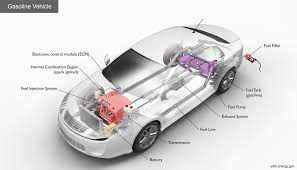

A car is a four-wheeled motor vehicle mainly used for transporting people from one place to another. It is one of the most common modes of transportation in the modern world because it provides comfort, speed, and convenience. Cars are widely used for daily commuting, long-distance travel, and personal as well as professional purposes. The main parts of a car include the engine, transmission, brakes, steering system, suspension, and tyres. The engine is the heart of the car and generates the power needed to move it. The transmission transfers this power to the wheels, while the brakes help slow down or stop the vehicle. The steering system allows the driver to control direction, and the suspension system ensures a smooth and stable ride.
